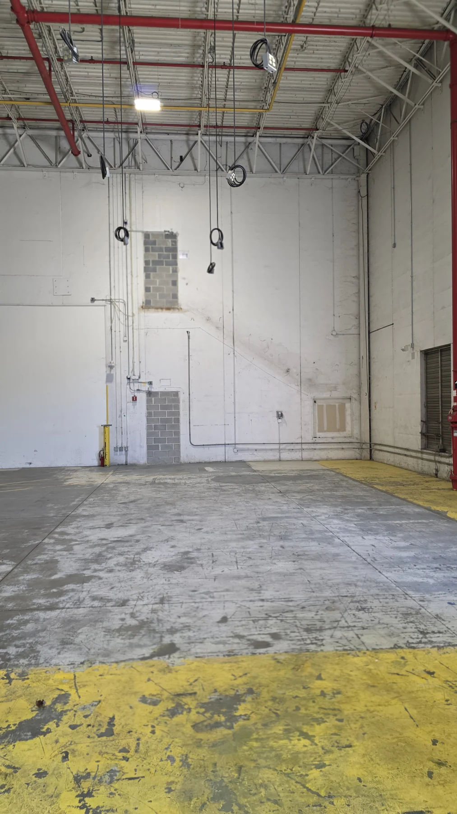

2000 Bishops Gate Blvd.Mount Laurel, NJ
Concrete / Commercial
Slab work & pour-back coordination
Concrete demolition, inspection coordination, slab preparation, and pour-back work.
Commercial general contracting and construction management backed by self-perform demolition, concrete, carpentry, and structural capabilities.
A focused selection of active GMT work across commercial, industrial, and concrete environments.
Active interior construction, field coordination, and phased fit-out work.

ACTIVEActive demolition, interior renovation, field coordination, and ongoing construction progress.
Concrete demolition, inspection coordination, slab preparation, and pour-back work.
GMT stays close to the work. Our model combines project leadership, trusted trade partners, and direct field capability on the scopes that most often control schedule, safety, quality, and coordination.
GMT self-performs the scopes that can make or break sequencing and field coordination.
GMT's documented experience supports a broader construction platform than a single-market contractor.
Facility repositioning, demolition, slab modifications, structural work, utilities coordination, repairs, and phased improvements.
Office renovations, tenant improvements, doors and hardware, ceilings, framing, drywall, finishes, and occupied-space work.
Complex commercial environments requiring owner, design, vendor, MEP, and field coordination.
High-finish environments where appearance, schedule, turnover, and field quality all matter.
Existing-condition projects where demolition-to-build-out sequencing drives the plan.
Repeat client and property programs requiring consistent coordination across sites and jurisdictions.
Scope, logistics, budget, schedule, constructability, and trade strategy.
Trade alignment, long-lead tracking, site logistics, and project kickoff.
Field leadership, safety, documentation, quality control, and coordination.
Inspections, punch, closeout documents, final coordination, and owner turnover.
GMT maintains the documentation and controls expected on commercial projects, including licensing and insurance records, qualification packages, field reporting, inspection coordination, schedules, proposals, change management, and closeout documentation.
Repeat assignments across commercial, industrial, tenant improvement, demolition, concrete, and construction-management environments.
The point is not to look like the biggest contractor in the market. It is to deliver the responsiveness of a hands-on company with the structure, documentation, and field capability commercial clients expect.
ABOUT GMT ASSOCIATES →